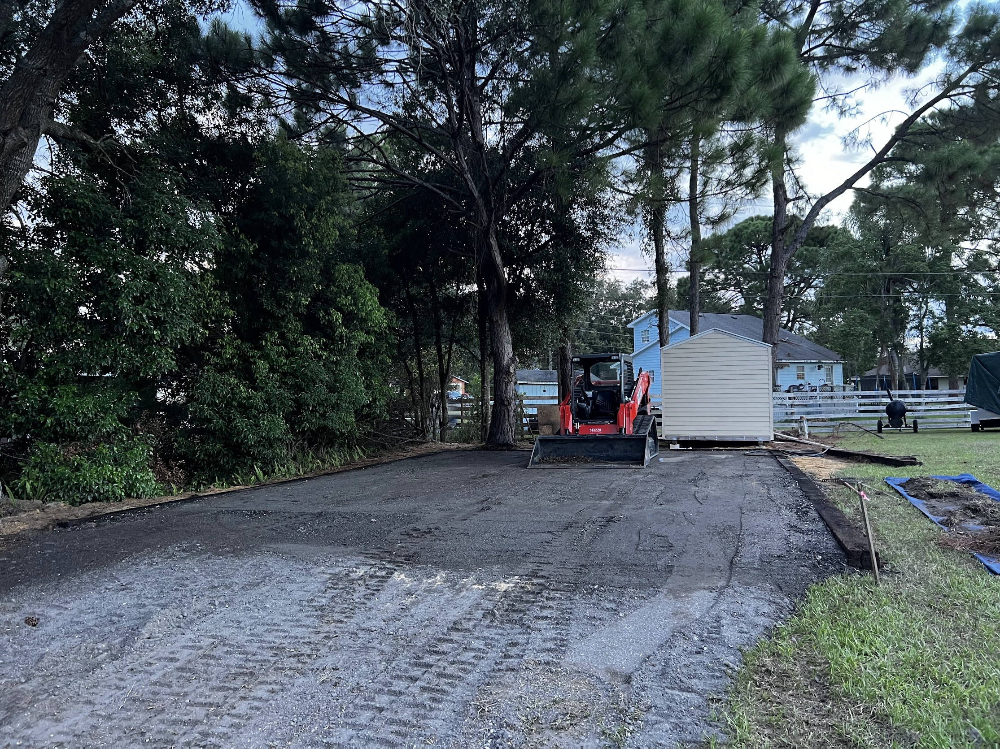
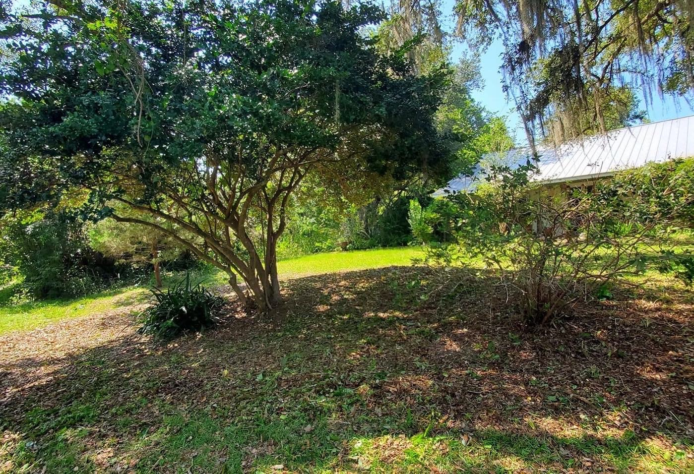
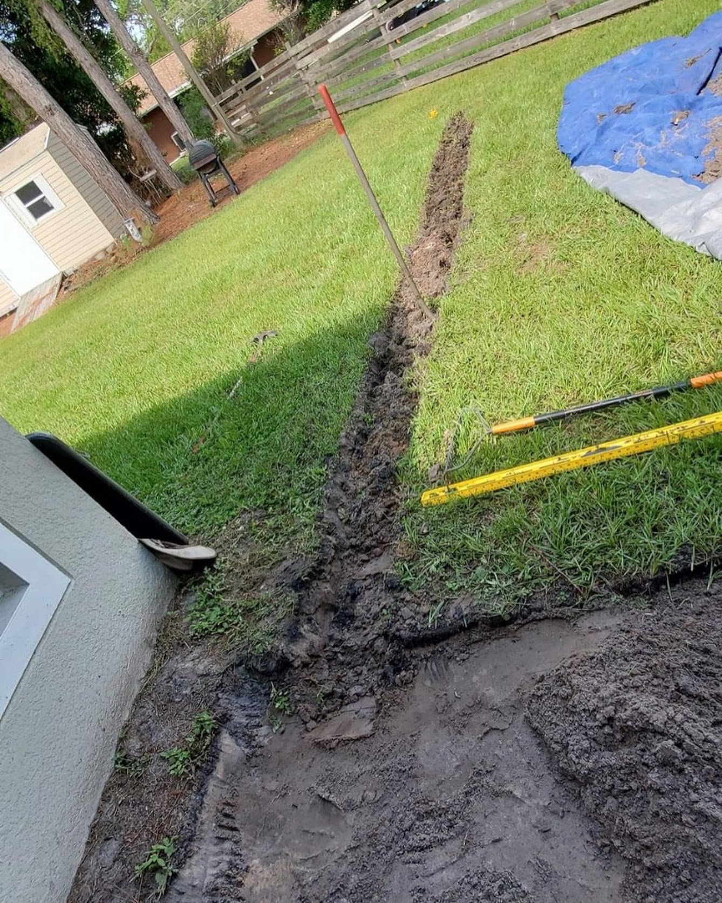

Professional Landscaping in Fentress County, TN
Landscaping, Gravel Driveways, French Drains, Sod, seed, Walls, etc.
Our Services

Landscape Design
Landscape design focuses on planning and creating outdoor spaces that are both functional and visually appealing. By considering layout, plants, and features like walkways or beds, it transforms your property into a cohesive and attractive landscape.

Gravel Driveways
Gravel driveway services level and refresh existing gravel surfaces to improve appearance and function. This helps eliminate ruts, improves drainage, and keeps your driveway smooth and durable.

Property Cleanups
A property cleanup service removes leaves, branches, overgrowth, and debris to restore the appearance and health of your yard. It helps keep your property clean, safe, and ready for regular lawn care or landscaping improvements.

French Drain Installation
An underground drainage system that redirects excess water away from your yard or foundation using a gravel trench and perforated pipe, helping prevent standing water and property damage.